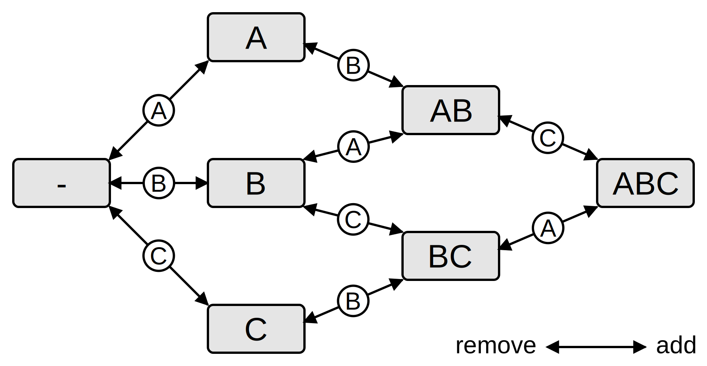
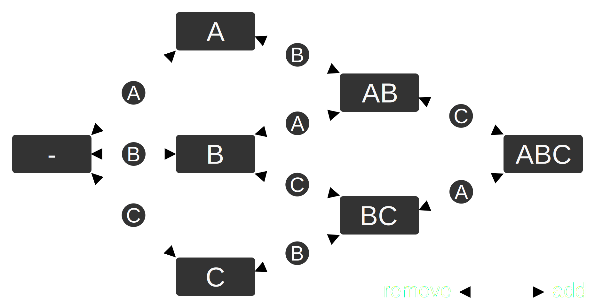

Architecture
Arche uses an archetype-based architecture. Therefore the name 😉.
This chapter explains the concept and Arche’s take on it.
Archetypes
The ASCII graph below illustrates the approach. Components for entities are stored in so-called archetypes. Archetypes represent unique combinations of components. This means that component data for all entities with exactly the same component is stored in the same archetype.
In the illustration below, the first archetype holds entities with (only/exactly) the components A, B and C, as well as their components. Similarly, the second archetype contains all entities with A and C, and their components.
1 Entities Archetypes Bit masks Queries
2
3 E E Comps
4 |0| |2|A|B|C| 111... <-. <---.
5 |1|---. |8|A|B|C| | |
6 |2| '-->|1|A|B|C| | |
7 |3| |3|A|B|C| |--Q(A,C) |
8 |4| | 101... |
9 |6| .-->|7|A|C| 101... <-' |--Q(B)
10 |7|---' |6|A|C| | 010...
11 |8| |4|A|C| |
12 |9|---. |
13 |.| | |5|B|C| 011... <---'
14 |.| '-->|9|B|C|
15 |.|
16 |.| <===> [Entity pool]Illustration of Arche’s archetype-based architecture.
The exact component composition of each archetype is encoded in a bitmask for fast comparison. Thus, queries can easily identify their relevant archetypes, and then simply iterate entities linearly, which is very fast and cache-friendly. Components can be accessed through a query in a very efficiently (≈1ns).
World entity access
For getting components by entity, e.g. for hierarchies, the world contains a list that is indexed by the entity ID (left-most in the figure). For each entity, it references its current archetype and the position of the entity in the archetype. This way, getting components for entities (i.e. random access) is fast, although not as fast as in queries (≈2ns vs. 1ns).
Note that the entities list also contains entities that are currently not alive,
because they were removed.
These entities are recycled when new entities are requested from the
ecs.World
.
Therefore, besides the ID shown in the illustration, each entity also has a generation
variable. It is incremented on each “reincarnation” of an entity.
Thus, it allows to distinguish recycled from dead entities, as well as from previous or later “incarnations”.
Performance
Obviously, archetypes are an optimization for iteration speed. But they also come with a downside. Adding or removing components to/from an entity requires moving all the components of the entity to another archetype. This takes roughly 10-20ns per involved component. To reduce the number of archetype changes, it is recommended to add/remove/exchange multiple components at the same time rather than one after the other.
However, as the benchmarks on the repo README illustrate, Arche seems to be the fastest Go ECS available. Not only in terms of iteration speed, which is particularly tailored for. Even when it comes to entity manipulation (adding, removing components etc.), where sparse-set ECS implementations should shine, Arche leads the field.
For more numbers on performance, see chapter Benchmarks.
Details
Actually, the explanation above is quite simplified. Particularly it leaves out Entity Relations and the archetypes graph and nodes.
Archetype graph
When components are added to or removed from an entity, it is necessary to find its new archetype. To accelerate the search, a graph of archetype nodes (or just nodes) is used. The figure below illustrates the concept. Each arrow represents the transition between two archetypes when a single component is added (solid arrow head) or removed (empty arrow head). Following these transitions, the archetype resulting from addition and/or removal of an arbitrary number of components can be found easily.


Illustration of the archetype graph. Letters represent components. Boxes represent archetype nodes.
Arrows represent transitions when a single component is added or removed.
Nodes and connections are created as needed. When searching for an archetype, the algorithm proceeds transition by transition. When looking for the next archetype, established transitions are checked first. If this is not successful, the resulting component mask is used to search through all nodes. On success, a new connection is established. If the required node was still not found, a new node is created. Then, the next transition it processed and so on, until the final node is found. Only then, an archetype is created for the node.
As a result, the graph will in most cases not be fully connected. There will also not be all possible nodes (combinations of components) present. Nodes that are only traversed by the search but never receive entities contain no archetype and are called inactive.
The graph stabilizes quickly.
Then, only the fast following of transitions is required to find an archetype when components are added or removed.
Transitions are stored in the nodes with lookup approx. 10 times faster than Go’s map.
Entity relations
The archetype nodes explained above are utilized to implement Arche’s Entity Relations feature.
When an archetype contains a relation components, the respective node contains an archetype “table”
for each entity that is a target of that relation.
As an example, we have components A, B and R, where R is a relation.
Further, we have two parent entities E1 and E2.
When you create some entities with components A B R(E1) and A B R(E2), i.e. with relation targets E1 and E2,
the following node is created:
1 Node [ A B R ]
2 |
3 |--- E1 E Comps
4 | |3|A|B|R|
5 | |6|A|B|R|
6 | |7|A|B|R|
7 |
8 '--- E2 E Comps
9 |4|A|B|R|
10 |5|A|B|R|When querying without specifying a target, the “inner” archetypes are simply iterated if the node matches the filter.
When querying with a relation target (and the node matches), the archetype for the target entity is looked up in a standard Go map.
Archetype removal
Normal archetypes without a relation are never removed, because they are not a temporary thing. For relation archetypes, however, things are different. Once a target entity dies, it will never appear again (actually it could, after dying another 4294967294 times).
In Arche, empty archetypes with a dead target are recycled. They are deactivated, but their allocated memory for entities and components is retained. When an archetype in the same node, but for another target entity is requested, it is reused. To be able to efficiently detect whether an archetype can be removed, a bitset is used to keep track of entities that are the target of a relation.